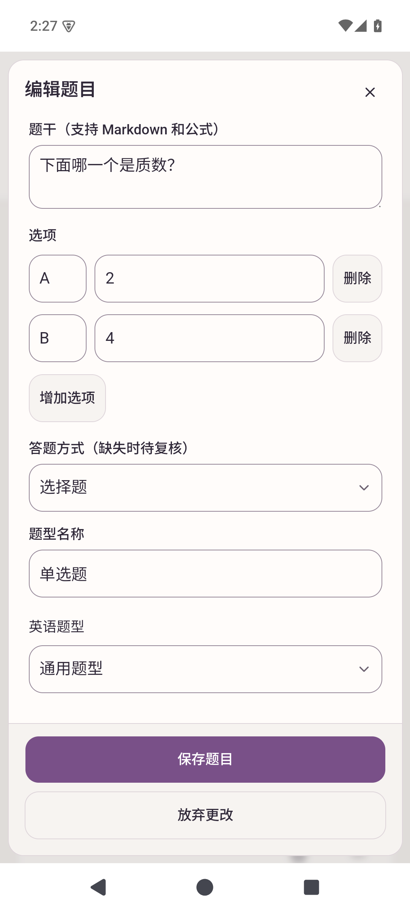
Native Android API 35 arm64. Historical baselines are marked; this is visual acceptance, not a controlled benchmark.
Same isolated fixture; favorite stays visible, edit/delete move to More.
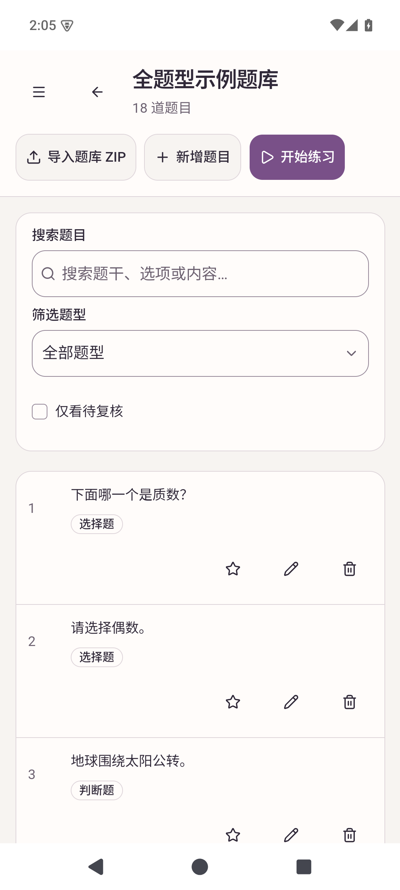
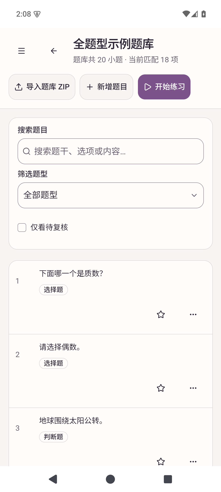
Before is a labelled historical acceptance capture. New form prioritizes stem/options and keeps touch focus on its heading.

Before is historical. The new true-empty state explains the star and offers Browse banks.

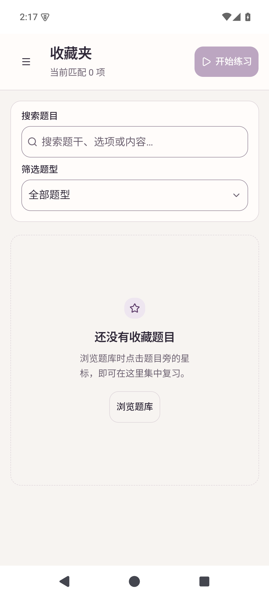
Before is historical. Menu labels distinguish append, replacement and repair.
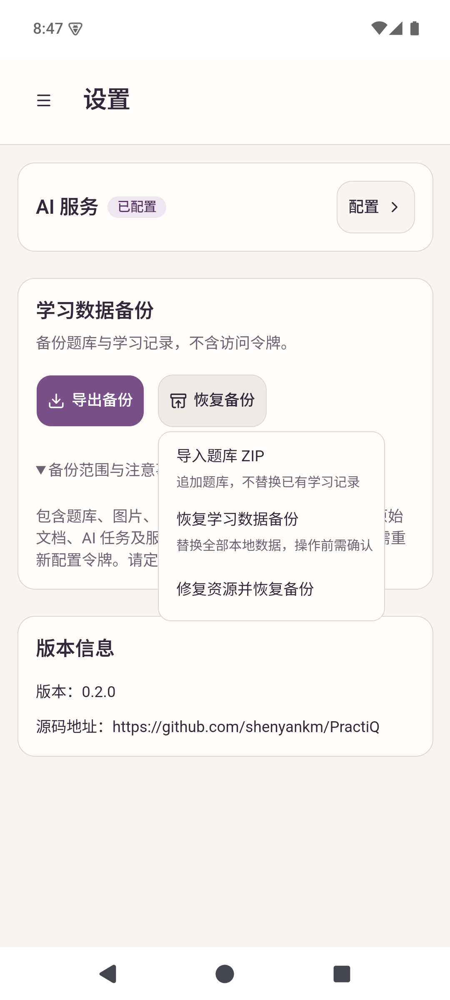
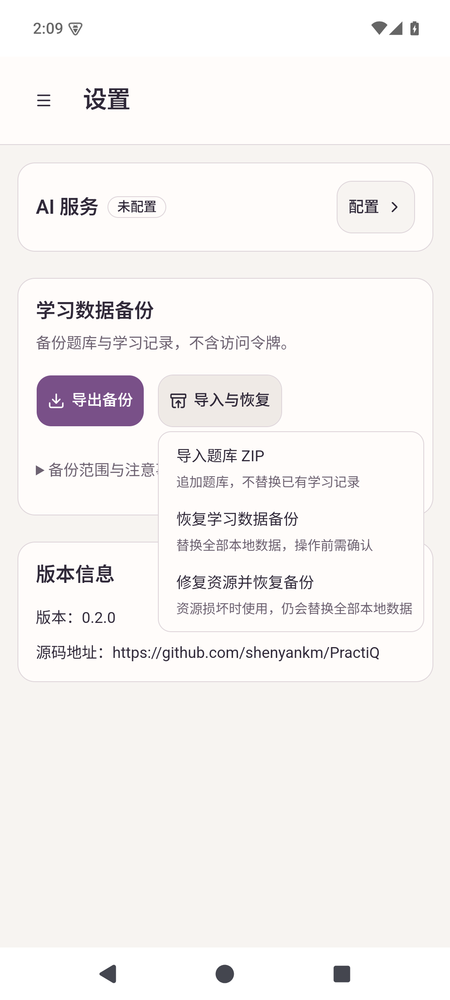
Only two explicit GET /api/maintenance requests reached the loopback health stub: HTTP 503 then HTTP 200. No model request.
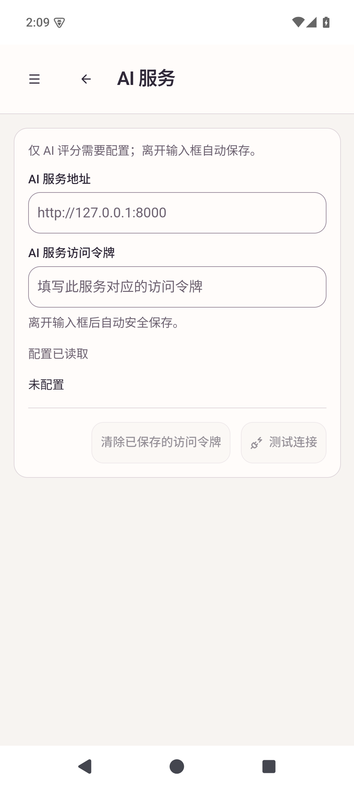
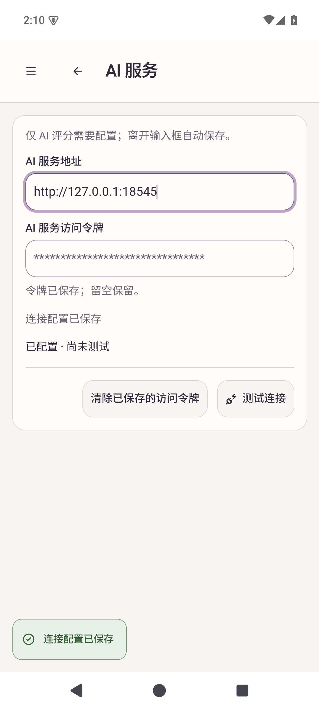
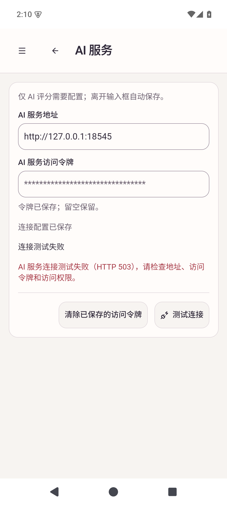
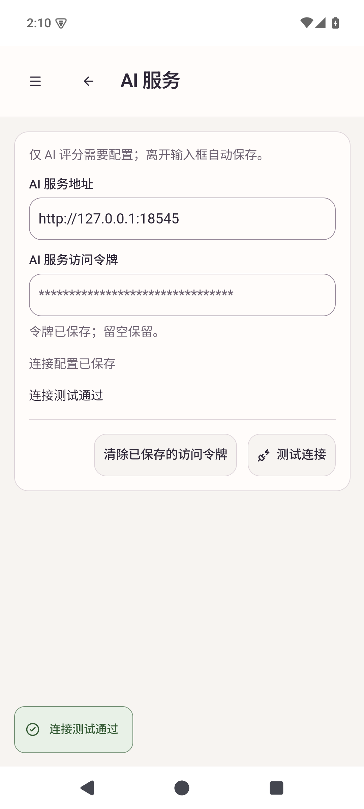
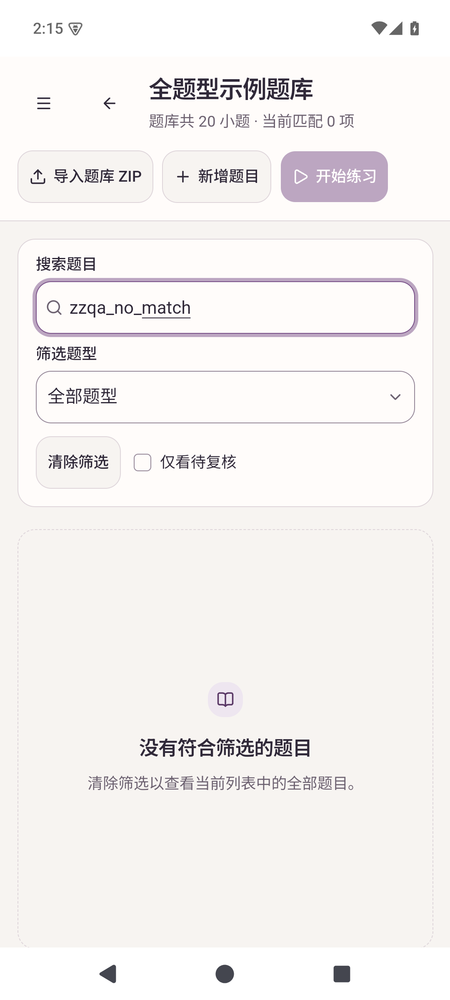
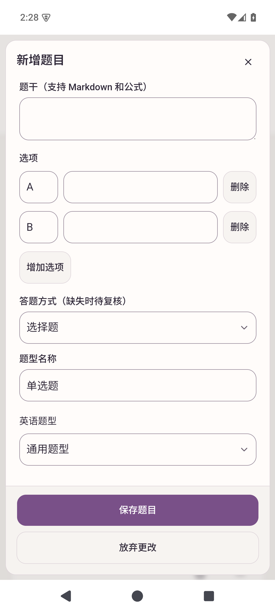